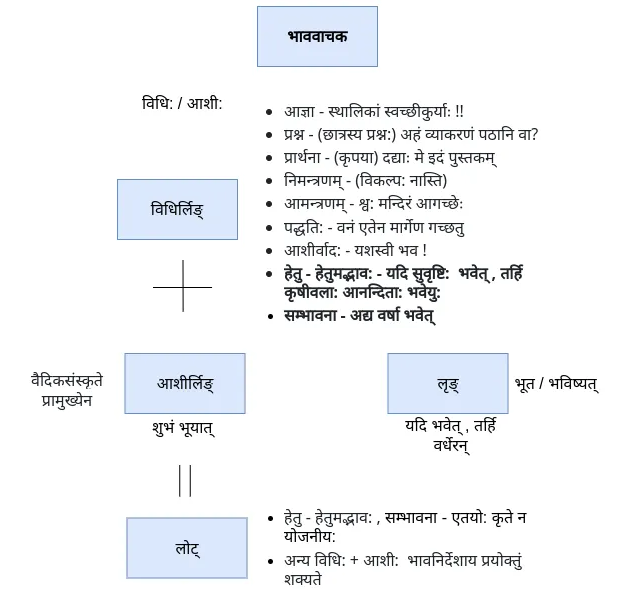

क्रियापदम् ( तिङ्न्त:)
लकारा:
प्रथम: भाग: कालवाचका: (काल-निर्देशार्थम्)
द्वितीय: भाग: भाववाचका: (भाव-निर्देशार्थम्)
- आज्ञा , प्रार्थना , इच्छा - लोट्, लिङ्
- क्रियातिपत्ति - लृङ्
- लेट् (केवलं वेदेषु)

लोट्-लकार:
निम्न भावानां निर्देशाय अस्य लकार: प्रयुज्यते | अयं लकार: विधि-लिङ्-लकारेण समं प्रयोक्तुं शक्यते |
- आज्ञा - स्थालिकां स्वच्छीकुरु !!
- प्रश्न - (छात्रस्य प्रश्न:) अहं व्याकरणं पठानि वा?
- प्रार्थना - (कृपया) देहि मे इदं पुस्तकम्
- निमन्त्रणम् - (विकल्प: नास्ति)
- आमन्त्रणम् - (विकल्प: अस्ति) श्व: मन्दिरं आगच्छ
- पद्धति: - वनं एतेन मार्गेण गच्छ
- आशीर्वाद: - यशस्वी भव !
- हेतु - हेतुमद्भाव:, सम्भावना - एतयो: कृते अयं लकार: न योजनीय:
प्रत्यया:
पप.
- तु ताम् अन्तु
- 0 तम् त
- आनि आव आम
आप.
- ताम् इताम् अन्ताम्
- स्व इथाम् ध्वम्
- ऐ आवहै आमहै
लिङ्-लकार:
अत्र द्वौ प्रकारौ स्त: |
१. विधि - लिङ्-लकार:
निम्न भावानां निर्देशाय अस्य लकार: प्रयुज्यते | अयं लकार: लोट्-लकारेण समं प्रयोक्तुं शक्यते |
- आज्ञा - स्थालिकां स्वच्छीकुर्याः !!
- प्रश्न - (छात्रस्य प्रश्न:) अहं व्याकरणं पठेयम् वा ?
- प्रार्थना - (कृपया) दद्याः मे इदं पुस्तकम्
- निमन्त्रणम् - (विकल्प: नास्ति)
- आमन्त्रणम् - श्व: मन्दिरं आगच्छेः
- पद्धति: - वनं एतेन मार्गेण गच्छेः
- आशीर्वाद: - यशस्वी भवेः !
- **सम्भावना - अद्य वर्षा भवेत् **
२. आशी: - लिङ्-लकार:
(आशीर् नाम अप्राप्यस्य इच्छा | अद्य / इदानीम् अप्राप्य ( यस्य प्राप्ति: सुलभतया न शक्यते ) विषये अस्य लकार: प्रयुज्यते | वैदिकसंस्कृते अस्य उपयोग: प्राचुर्येण दृश्यते किन्तु लौकिकसंस्कृते अस्य उपयोग: नगण्य:|
- अहं राष्ट्रपति: भुयासम्
- मम शत्रु: म्रियात्
पप.
- इत् इताम् इयु:
- इ: इतम् इत
- इयम् इव इम
आप.
- ईत ईयाताम् ईरन्
- ईथा: ईयाथाम् ईध्वम्
- ईय ईवहि ईमहि
लृङ्-लकार: क्रियातिपत्ति:
यदि वर्षा अभविष्यत्, तर्हि सस्यानि अवर्धिष्यन्त | ( जर पाऊस पडला असता तर पिके (चांगली) वाढली असती )
यदि कृष्णः गीतां न अवदिष्यत्, तर्हि अर्जुनः न अयोत्स्यत |
यदि कैकयी वरं न अप्राक्षीत्, तर्हि रामः वनं न अगमिष्यत् । ( जर कैकेयीनी वर मागितला नसता तर राम वनवासात गेला नसता )
अहम् अध्ययनं अकरिष्यम् चेत् परीक्षाम् अपि अलेखिष्यम् ।
अभिमन्युः चक्रव्यूहं सम्यक् अज्ञास्यत् चेत् सः कौरवेभ्यः न पराजेष्यत ।
लेट्-लकार:
अयं लकार: केवलं वेदेषु प्रयुज्यते | लौकिकसंस्कृते अस्य उपयोग: न भवति , न करणीय: अपि |
वेदेषु अस्य उपयोग: भिन्नेषु अर्थेषु कृत: दृश्यते - वर्तमानकाल: , आज्ञा , विधि:, आदय:
नेता इन्द्रो नेषत् ।
विद्युत् पताति ।
प्रजापति: उदधिं च्यावयाति ।